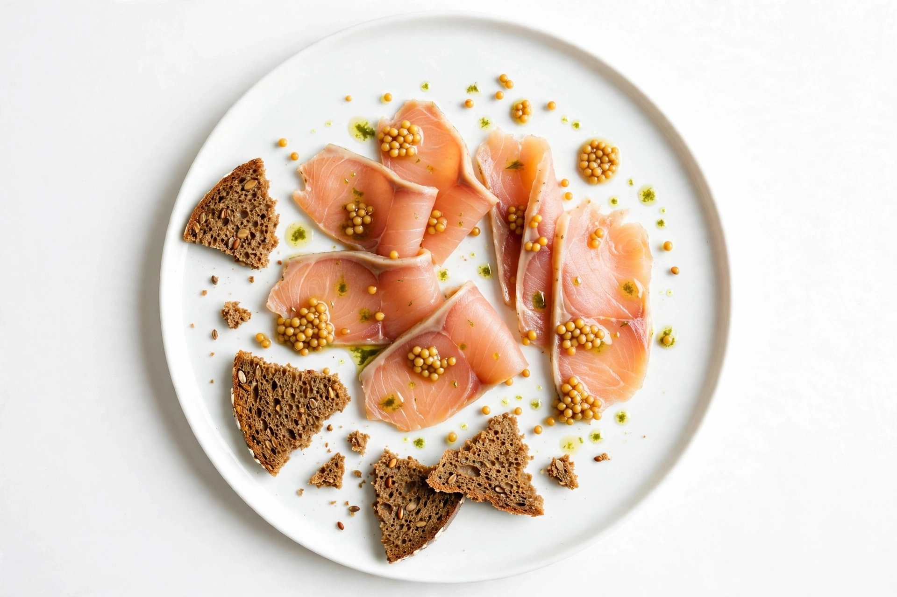
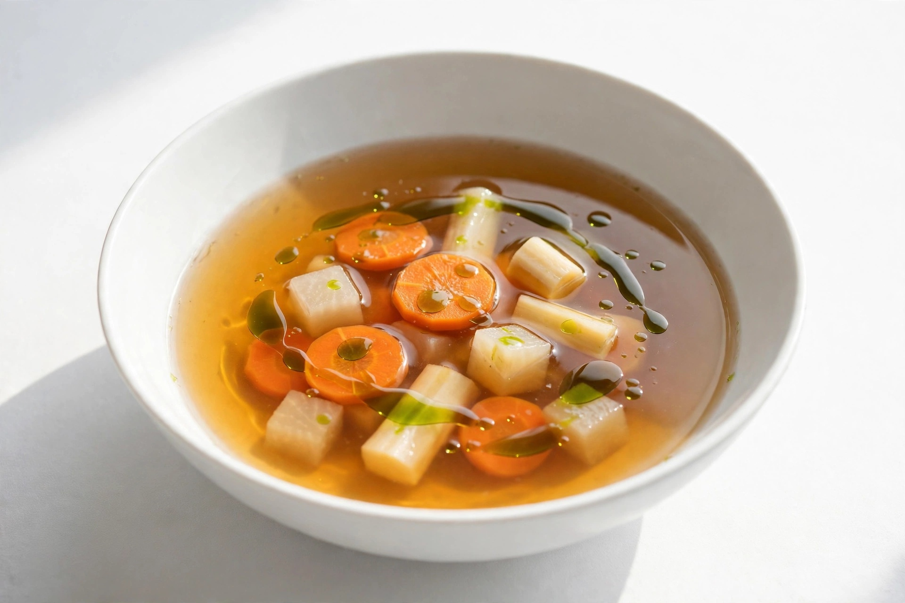
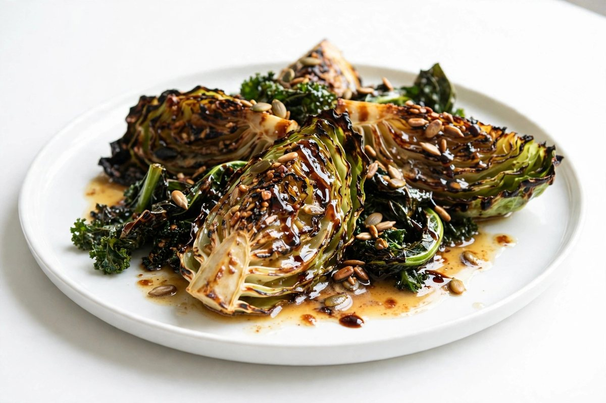

Reward-Cured Trout
House-Cured Trout · Pickled Mustard Seed · Rye Crisp · Dill Oil
Curing is a slow conversation between salt, time, and taste — each batch is tasted, adjusted, and tasted again. The kitchen learns by feedback, the way reinforcement learning improves through reward: small corrections, repeated until the balance is earned.
Taught by a hundred tastings.

The Distilled Broth
Double Beef Broth · Root Vegetables · Herb Oil
A full stock, clarified and reduced until only its essence remains — everything the large pot knew, carried in a small, clear cup. Knowledge distillation works the same way, teaching a compact model to hold the judgment of a far larger one.
Everything essential, nothing extra.

Pruned Winter Greens
Charred Cabbage · Brown Butter · Toasted Seeds · Aged Vinegar
Charred cabbage, cut back to its sweet heart and dressed simply. Pruning removes the connections a network can spare, and what remains runs lighter and faster — and, like the cabbage, surprisingly sweeter for the cutting.
Less, kept deliberately.